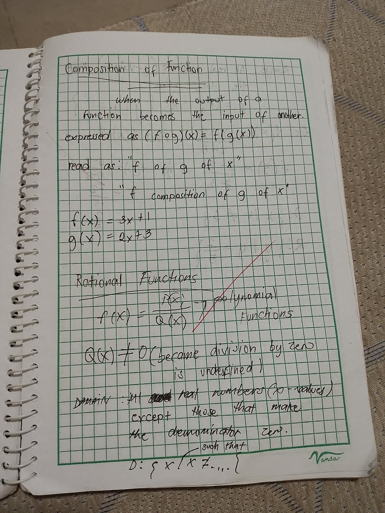

Composition of Function:
Function composition is the process of applying one function to the result of another. It's essentially nesting functions, where the output of the inner function becomes the input of the outer function. The composition of functions f and g is written as f(g(x)) or (f ∘ g)(x), and it means applying g first, then applying f to the result
Explanation:
Two Functions:
We start with two functions, let's call them f(x) and g (x) .
Applying the Inner Function:
First, we evaluate the inner function, g (x) , using a given input value x. This gives us an output.
Applying the Outer Function:
The output of g (x) then becomes the input for the outer function, f(x) . We evaluate f (g(x)) .
Resulting Function:
The combined process of g (x) followed by f(x) is the composite function, often written as f(g(x)) or f • g.
Example:
Let's say:
f(x) = x^2 (squaring a number)
• g (x) = x + 3 (adding 3 to a number) ©
To find the composition f (g(x)) :
1. First, we apply g(x) : g(x) = x + 3
2. Then, we apply f(x) to the result:f (g(x)) = f(x + 3) = x + 3)^2 Therefore, the composite function is (x + 3)^2.
